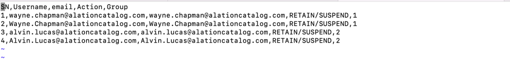
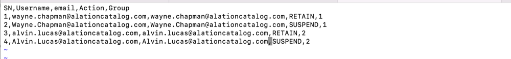
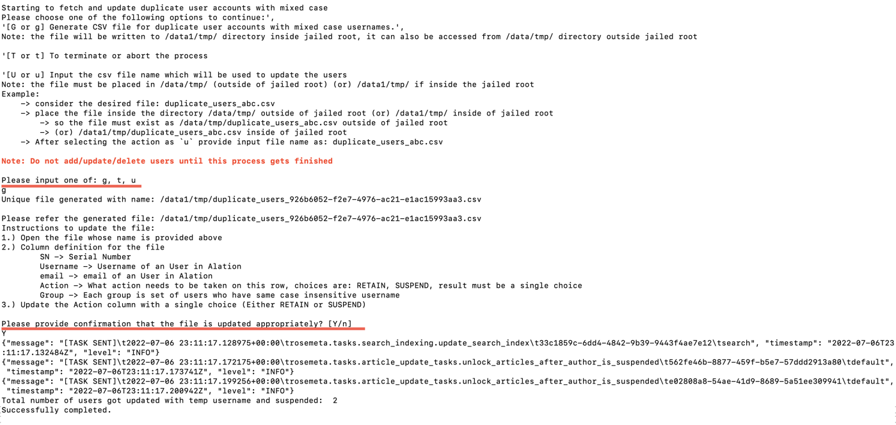

De-duplicate Mixed Case Usernames¶
Customer Managed Applies to customer-managed instances of Alation
Applies to version 2022.3
From version 2022.3, Alation ends support for case sensitive usernames. All usernames are treated as case insensitive. For example, usernames like Alvin.Lucas@alationcatalog.com and alvin.lucas@alationcatalog.com are considered identical usernames.
Note
In releases prior to 2022.3, case sensitive usernames were supported. Usernames differing in the use of lowercase or uppercase letters were considered different usernames. For example, usernames like Alvin.Lucas@alationcatalog.com and alvin.lucas@alationcatalog.com were considered two different usernames.
After updating the Alation application to 2022.3, make sure that your Alation instance does not have any duplicate mixed case usernames created in previous releases. Note that the owner of the duplicate accounts will not be able to log in until their accounts are de-duplicated.
Alation provides two ways to facilitate the process of finding and suspending duplicate user accounts:
In release 2022.4.3, Alation provides API endpoints that can be used by Server Admins for both on-premise and Alation Cloud Service instances of Alation.
In release 2022.3, Alation provides a one-off script that can be used by an admin with backend access to on-premise installations of Alation.
In both cases, the overall process for de-duplicating mixed case usernames is:
The script or the API endpoint creates a list of all usernames that are duplicates from the standpoint of case sensitivity. The list is provided in CSV format.
You edit the CSV file to specify which usernames should be retained or suspended.
Note
If you’re running the script, you’ll have the option to pause the script while you edit the CSV file or exit the script and re-initiate it after you’ve edited the CSV file.
The script or the API endpoint processes the edited CSV file and suspends the user accounts you specified.
This process is described in detail below.
Use the API to De-Duplicate Usernames¶
In release 2022.4.3, a Server Admin for both on-premise and Alation Cloud Service instances of Alation can use APIs to de-duplicate mixed case usernames. To use Alation APIs, you must first generate a Refresh Token and an Access Token. If you need help generating your tokens, see Generate Tokens for the Alation API.
Step 1: Download a List of Duplicate Usernames¶
To start, you need to use the API to generate a CSV file containing any duplicate usernames.
Make a GET request to
/integration/v1/generate_dup_users_accts_csv_file/to download a CSV file containing duplicate usernames. You can use the documentation for this endpoint on Alation’s Developer Portal for help constructing the request.As an example, the following code shows the GET request with curl. You would have to replace
{YOUR_ALATION_DOMAIN}with the URL of your Alation instance and{YOUR_ACCESS_TOKEN}with your personal API access token.curl --request GET \ --url https://{YOUR_ALATION_DOMAIN}/integration/v1/generate_dup_users_accts_csv_file/ \ --header 'accept: application/json'\ --header 'TOKEN: {YOUR_ACCESS_TOKEN}'
If no mixed case duplicates are found, you will get a 200 Success response.
If any mixed case duplicates are found, the response will include the list of usernames in CSV format. Depending on your environment and how you make the API request, the list may be provided in different ways, for example:
The list may be downloaded to your computer as a CSV file.
Each row may be printed to the screen as a comma separated string. You would need to copy the rows into a file and save the file to your computer so you can edit it.
Step 2: Edit the CSV File¶
The prior step results in a CSV file containing duplicate usernames. You need to edit the file to indicate which usernames to retain or suspend.
To edit the file:
Open the file in an editor of your choice. For example, if you prefer to edit it directly in the Terminal, open a new Terminal window, enter the Alation shell, go to /data1/tmp and use the vi editor to open the file.
The screenshot below shows an example of a file generated by the script.
The file contains mixed case duplicate usernames organized by group. Each group has a numeric ID and includes usernames that only differ in the use of uppercase and lowercase letters.
The file includes the following columns:
SN – Serial number of a record in the file.
Username – Username of the Alation user.
Email – Email of the Alation users.
Action – Specifies the action to take on this row. The initial value is
RETAIN/SUSPEND.Group – ID of a group (set of users who have duplicate case insensitive usernames).
For each group of the duplicates, you need to specify which username to retain and which usernames to suspend to eliminate the duplicates. You only need to edit the Action values.
Use
RETAINfor the username to retain. In each group of duplicating usernames, you can only retain one username.Use
SUSPENDfor the duplicate usernames. The duplicate usernames will be suspended.
The screenshot below shows an example of an edited file.
Save the changes.
Step 3: Upload the CSV File via API¶
You will now use the API to upload the edited CSV file to Alation. Once the file has been uploaded, Alation will suspend the accounts you indicated in the file.
Make a POST request to
/integration/v1/remove_dup_users_accts/to upload your edited CSV file. You can use the documentation for this endpoint on Alation’s Developer Portal for help constructing the request.As an example, the following code shows the POST request with curl. You would have to replace
{YOUR_ALATION_DOMAIN}with the URL of your Alation instance,{YOUR_ACCESS_TOKEN}with your personal API access token, and{YOUR_CSV_FILE}with the name and path of your edited CSV file.curl --request POST \ --url https://{YOUR_ALATION_DOMAIN}/integration/v1/remove_dup_users_accts/ \ --header 'accept: application/json'\ --header 'content-type: multipart/form-data'\ --header 'TOKEN: {YOUR_ACCESS_TOKEN}'\ --form csv_file=@{YOUR_CSV_FILE}.csv
The duplicate accounts will be suspended according to the edits you made in the CSV file. Note that the suspended usernames will be changed to the following format:
<username>_uis_suspend_<uuid4>, for example:Alvin.Lucas@alationcatalog.com_uis_suspend_26b6052-f2e7-4976-ac21-e1ac15993.Assuming the POST request worked, you will get a success message confirming that the duplicate user accounts have been suspended.
Use the Script to De-Duplicate Usernames¶
In release 2022.3, an admin with backend access to an on-premise Alation server can use a script to de-duplicate mixed case usernames. Follow the instructions below to use the script.
Step 1: Generate a List of Duplicate Usernames¶
Initially, run the script to generate a list of duplicate usernames. To run the script:
Use SSH to connect to the Alation server.
Enter the Alation shell.
sudo /etc/init.d/alation shell
Change the user to
alation.sudo su alation
Go to /opt/alation/django.
cd /opt/alation/django
Run the script with the following command:
python ./rosemeta/one_off_scripts/generate_and_remove_dup_user_accounts_with_mixed_case.pycThe output will contain a prompt to specify one of the three options:
Gorg– Generate a CSV file listing the duplicate user accounts with mixed case usernames.Uoru– Specify the CSV file name which will be used to update the user accounts.Tort– Terminate and exit.
Type
Gorgand press Enter to generate the list of duplicate usernames.The script will analyze the usernames on your instance. If any mixed case duplicates are found, it will generate a CSV file in the directory /data1/tmp/ inside the Alation chroot. If no duplicates are found, you’ll see the message No duplicate user accounts with mixed case usernames. In the latter case, no further action is required.
If the script identifies some duplicate accounts and generates a CSV file, you’ll see a message similar to the following: Unique file generated with name: /data1/tmp/duplicate_users_926b6052-f2e7-4976-ac21-e1ac15993aa3.csv.
The script will display the editing instructions for the generated file and the prompt Please provide confirmation that the file is updated appropriately? [Y/n]. You can leave the script waiting for the input and edit the file right now in a separate Terminal window (or using other tools) and then return to the window with the script and continue.
Alternatively, you can type n to exit the script, take as much time as needed to edit the CSV file, and then rerun the script with the U (update) option.
If you chose to exit from the script, exit from the user
alation:
exit
Exit from the Alation shell:
exit
Step 2: Edit the CSV File¶
The script generates a CSV file with a name similar to duplicate_users_926b6052-f2e7-4976-ac21-e1ac15993aa3.csv in the directory /data1/tmp.
To edit the file:
Open the file in an editor of your choice. For example, if you prefer to edit it directly in the Terminal, open a new Terminal window, enter the Alation shell, go to /data1/tmp and use the vi editor to open the file.
The screenshot below shows an example of a file generated by the script.
The file contains mixed case duplicate usernames organized by group. Each group has a numeric ID and includes usernames that only differ in the use of uppercase and lowercase letters.
The file includes the following columns:
SN – Serial number of a record in the file.
Username – Username of the Alation user.
Email – Email of the Alation users.
Action – Specifies the action to take on this row. The initial value is
RETAIN/SUSPEND.Group – ID of a group (set of users who have duplicate case insensitive usernames).
For each group of the duplicates, you need to specify which username to retain and which usernames to suspend to eliminate the duplicates. You only need to edit the Action values.
Use
RETAINfor the username to retain. In each group of duplicating usernames, you can only retain one username.Use
SUSPENDfor the duplicate usernames. The duplicate usernames will be suspended.
The screenshot below shows an example of an edited file.
Save the changes.
If you were editing the file outside of the Alation server, copy the updated file to /data1/tmp inside the Alation chroot to make it available to the script.
Step 3: Update the User Accounts¶
Use the appropriate set of steps depending on whether or not you previously exited from the script.
Script is Waiting for Input¶
If you still have the Terminal window with the script waiting for your input:
Go back to the Terminal window that has the script in progress. The last prompt says: Please provide confirmation that the file is updated appropriately? [Y/n].
Type
Yin response to the last prompt.The script will suspend the duplicate accounts according to the edits you made in the CSV file. Note that the suspended accounts will be changed to the following format:
<username>_uis_suspend_<uuid4>, for example:Alvin.Lucas@alationcatalog.com_uis_suspend_26b6052-f2e7-4976-ac21-e1ac15993.Wait for the success message that will be similar to the following:
Total number of users got updated with temp username and suspended: 2 Successfully completed.
If you have no other tasks in the Alation shell, exit the shell.
exitThe screenshot below illustrates this scenario:

Script Has Been Exited¶
Run the script again, choosing the U option when prompted:
Use SSH to connect to the Alation server.
Enter the Alation shell.
sudo /etc/init.d/alation shell
Change the user to
alation.sudo su alation
Go to /opt/alation/django.
cd /opt/alation/django
Run the script with the following command:
python ./rosemeta/one_off_scripts/generate_and_remove_dup_user_accounts_with_mixed_case.pycWhen prompted, provide the
Uoption. This option is for updating the usernames after editing the file.The duplicate accounts will be suspended according to the edits you made in the CSV file. Note that the suspended usernames will be changed to the following format:
<username>_uis_suspend_<uuid4>, for example:Alvin.Lucas@alationcatalog.com_uis_suspend_26b6052-f2e7-4976-ac21-e1ac15993.Wait for the success message.
If you have no other tasks in the Alation shell, exit the shell.
exit